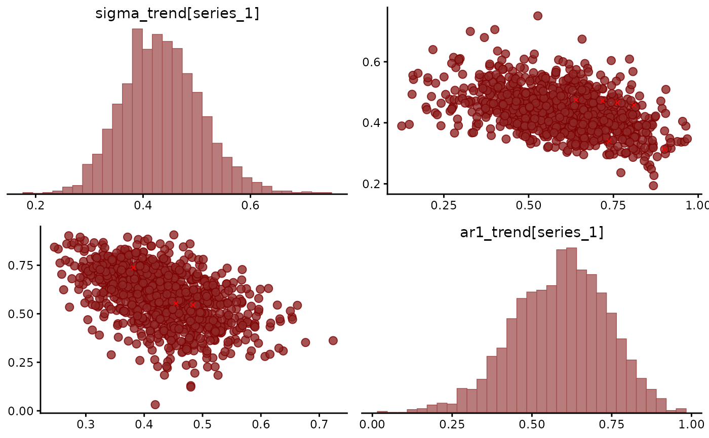

Scatters the posterior draws of each pair of parameters, with each
parameter's marginal posterior on the diagonal, as
bayesplot::mcmc_pairs() draws them. Divergent transitions are
marked. A ridge or a funnel between two parameters shows that the
data separate them poorly.
Usage
# S3 method for class 'mvgam'
pairs(x, variable = NULL, regex = FALSE, ...)Arguments
- x
A fitted
mvgamorjsdgamobject- variable
Names of the variables (parameters) to plot, as given by a character vector or a regular expression (if
regex = TRUE). By default, a hopefully not too large selection of variables is plotted.- regex
Logical; Indicates whether
variableshould be treated as regular expressions. Defaults toFALSE.- ...
Further arguments to
bayesplot::mcmc_pairs(), such asoff_diag_args.
Details
Without variable, the plot shows the parameters
mcmc_plot.mvgam() shows: the population coefficients, the family
parameters, the variance components and the trend's dynamics and
loadings. The per-basis smooth coefficients (s_*) and the
group-level deviations (r_*) run to hundreds on a spline or
hierarchical fit. They are drawn when variable names them.
See also
mcmc_plot.mvgam() draws the other bayesplot MCMC plots.
mvgam_draws lists the shortcuts variable accepts.
Other posterior summaries:
VarCorr.mvgam(),
bibtex(),
how_to_cite.mvgam(),
hypothesis.mvgam(),
index-mvgam,
mcmc_plot.mvgam(),
methods_md(),
mvgam_draws,
posterior_interval.mvgam(),
ranef.mvgam(),
smooths.mvgam(),
summary.mvgam()
Examples
# \dontrun{
set.seed(13)
simdat <- sim_mvgam(family = poisson(), n_series = 1L,
n_timepoints = 120L, trend_model = AR())
mod <- mvgam(y ~ s(x), trend_formula = ~ AR(p = 1),
data = simdat$data_train,
family = poisson(),
chains = 2, silent = 2)
#> Warning: 9 of 2000 (0.0%) transitions ended with a divergence.
#> See https://mc-stan.org/misc/warnings for details.
# The trend's autoregression against its innovation scale
pairs(mod, variable = "trend_params")

# Next, mcmc_plot(mod, type = "rank_overlay") checks that the chains
# mix
# }